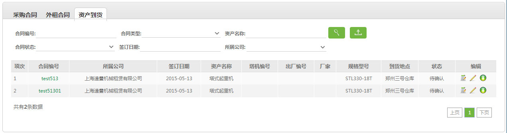

2.3、资产到货

业务背景：
合同状态的目的是呈现合同中塔机及零部件到货的状态，合同状态共有3个:
1. 待确认：合同中所有的资产都没有到货.
2. 确认中：合同中部份的资产已经到货但尚有资产未到货.
3. 已确认：合同中所有的资产全部已经到货.
说明：
1、 进行资产到货查询，查询条件：合同编号、合同类型、资产名称、合同状态、签订日期、所属公司；
进行资产到货查询，查询条件：合同编号、合同类型、资产名称、合同状态、签订日期、所属公司；
2、 导出查询的所有合同内容;
导出查询的所有合同内容;
3、点击合同编号查看详情、 审核、
审核、 编辑到货信息、和
编辑到货信息、和 下载资产到货合同资料;
下载资产到货合同资料;
4、流程：到货-审核。